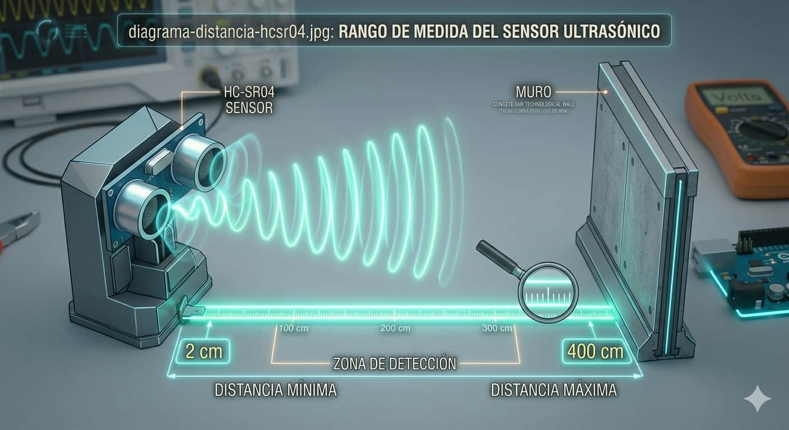
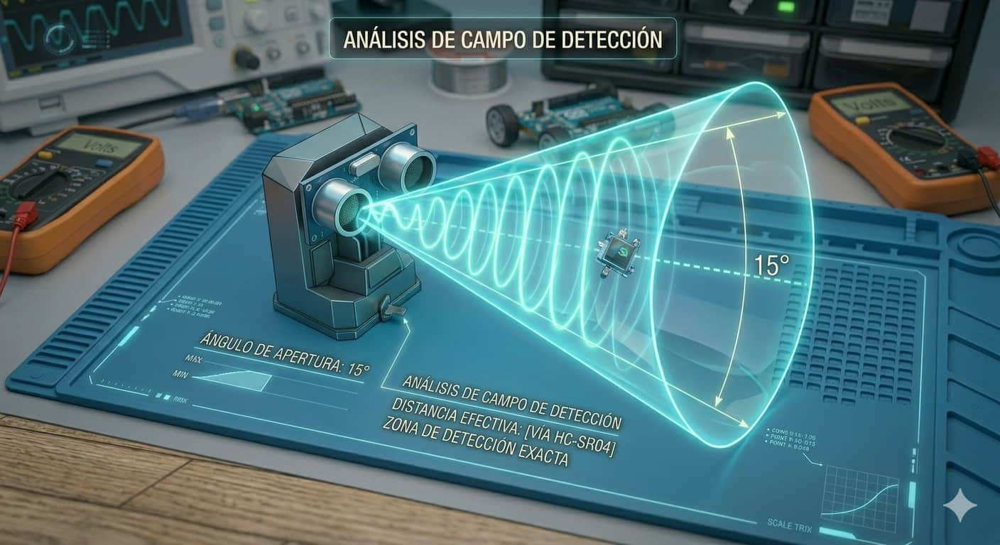
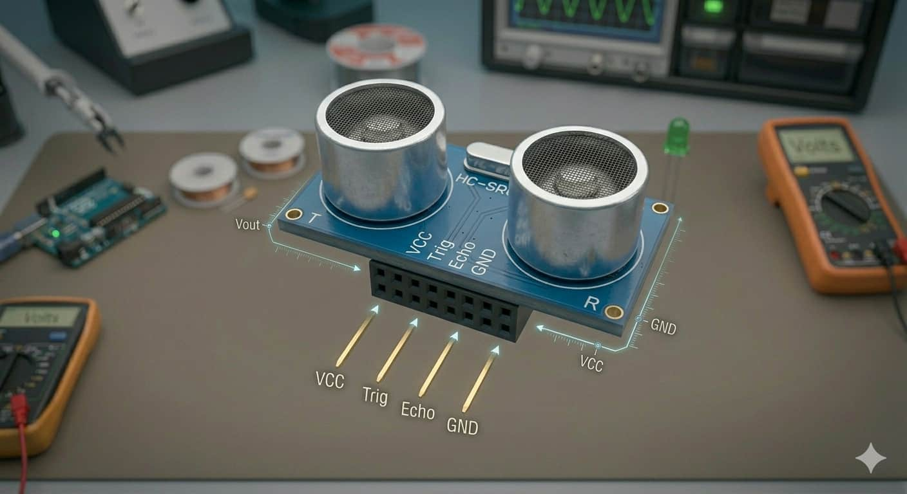
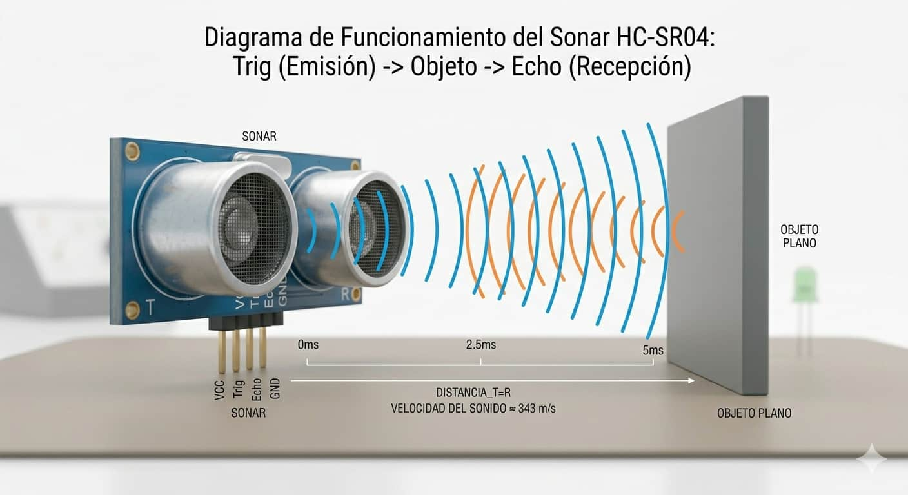
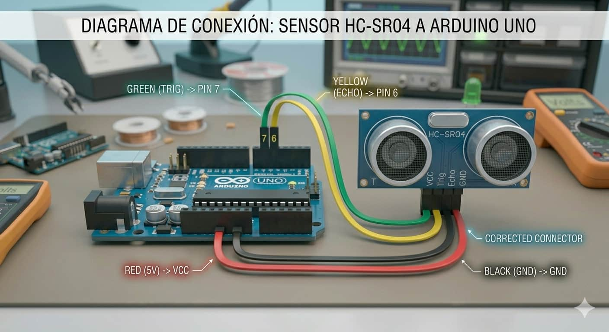

Rango de Medición

Es extremadamente versátil en distancias cortas, permitiendo lecturas precisas desde los 2 centímetros hasta los 4 metros.

El HC-SR04 es el auténtico radar de tu Arduino. Permite medir distancias enviando ondas de sonido de alta frecuencia, convirtiéndose en el componente estrella para robots esquiva-obstáculos y medidores de nivel automatizados.

Es extremadamente versátil en distancias cortas, permitiendo lecturas precisas desde los 2 centímetros hasta los 4 metros.

Tiene un enfoque cerrado de menos de 15 grados, lo que garantiza que el robot detecte con precisión lo que tiene justo enfrente.

Cuenta con 4 conectores clave: VCC (alimentación), Trig (disparador), Echo (receptor) y GND (tierra).

Funciona igual que el sonar de un murciélago o un delfín. El pin Trig lanza un pulso de sonido imperceptible. El sonido viaja por el aire, rebota en un objeto y regresa. El pin Echo detecta el retorno y el Arduino mide el tiempo del viaje. Sabiendo la velocidad del sonido, el sistema calcula los centímetros exactos.
Una práctica común en robótica es montar el HC-SR04 sobre un servomotor para permitirle girar y escanear el entorno como si fuera una cabeza humana.

Conectamos los pines lógicos directamente a las entradas digitales del microcontrolador:
Este código calcula la distancia utilizando la duración del pulso reflejado:
int trig = 7; int echo = 6;
void setup() { pinMode(trig, OUTPUT); pinMode(echo, INPUT); Serial.begin(9600); }
void loop() {
digitalWrite(trig, HIGH); delayMicroseconds(10); digitalWrite(trig, LOW);
long d = pulseIn(echo, HIGH); int dist = d * 0.034 / 2;
Serial.println(dist); delay(200);
}
Aprende a programar la lógica de evasión de obstáculos con este videotutorial dedicado: